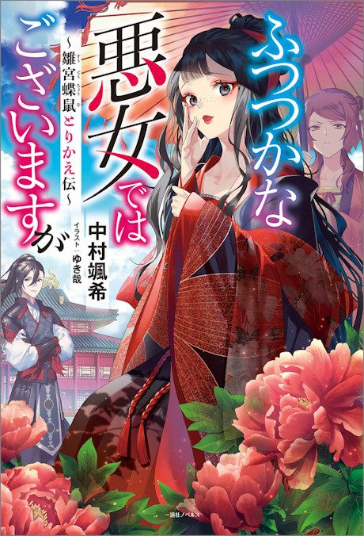

Anime
Anime
Light novel2026 · Drama, Fantasy, Romance
Though I Am an Inept Villainess
ふつつかな悪女ではございますが ~雛宮蝶鼠とりかえ伝~
AniList8.1
Animeter—
Episodes11 ep
SourceUnclear
Is it worth pushing through?
Built from what visitors report across all 11 episodes.
Loading reports…Checking what other people said about this one.
Sign in with your email at the top of the page to add your report.
More like Though I Am an Inept Villainess